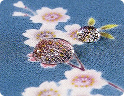
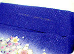
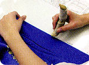
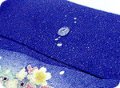

ガード加工は水をはじくので、雨の日やお食事の時も安心。また汚れも付きにくく黄変を予防するのに最適です。
期間内のアフターケアもついていてとってもお得で安心です。お手入れには「ふっくら仕上げ」が付いているので、仕立て上がりの風合いそのままでお届けします。
●水をはじきます
絹の風合いや通気性を損ないません。雨の日でも安心して着用できます。
●汚れが付きにくくなります
黄変を予防するのに最適です。※黄変・・・繊維に付着したシミ、汚れが酸化し変色したもの。
●たいへんお得です
ガードをしていない商品にかかるしみ抜きや部分洗い等の費用を考えると大変お得です。
※着用後、期間が経過しますと汚れが落ちにくくなりますのでお早めのお手入れをおすすめいたします。
|  |  |  | ||
| ファンデーションや 油性の汚れがついたら… |
汚れを落とし、その部分に 再ガードをかけます |
撥水加工を確認するので 安心です |
- ご注意 -
・全体の汚れが気になる場合、丸洗いをおすすめいたします。丸洗いをすると若干効果が落ちますので再度しあわせガードをおすすめします。（※丸洗い、しあわせガード有料にてお受けいたします）
・熱いコーヒーや油をかけた場合、染み込む場合がありますのでご注意下さい。
・着用状況によってはガード効果が薄れる場合もあります。
※着用より40日以内にお持ちいただくことをおすすめいたします。